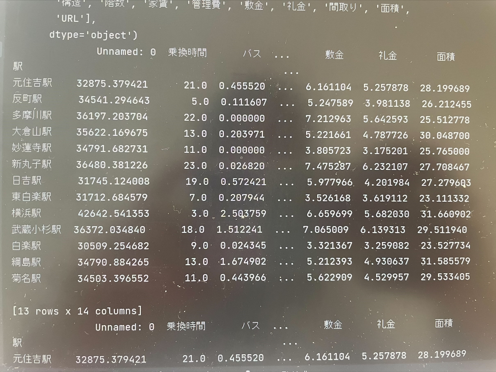

データーサイエンスの基礎
私がおすすめするエリアを紹介していきたいと思います。
私がおすすめしたいエリアは、東急東横線の白楽です。
なぜ東急東横線がいいのかを詳しく見ていきたいと思います。
このグラフは、合計時間、面積、家賃、築年数、について他の路線と比較したものです。

この４つの分類からバランスがとれているものは東急東横線です。
特に、合計時間が周りと比べてみると少ない。さらにそれだけでなく、家賃も10万円以下となっていて安いです。
また、20年ぐらいとあまり年数が経っていないことや、面積も丁度いいと思いました。
東急東横線をもう少し詳しく見てみました。
＊家賃

*築年数
このグラフから、白楽は家賃が6万円なので、凄く安い。また、築年数もそんなに古すぎないのでおすすめできると考えました。
そのほかのデータ

ここから、乗車時間、バス、敷金、礼金、面積を比べて見ることができます。
この表から、敷金、礼金の欄を見ると3万円ぐらいなので、周りと比べたところかなり安いです。
その他にも、面積は、23㎡なので狭くも広くもなくちょうど良い場所です。
ソースコード
- df_mean = df_data.groupby("路線").mean()
- x = df_mean.index
- y = df_mean.loc[:, "家賃"]
- plt.bar(x, y)
- plt.xlabel("路線")
- plt.ylabel("家賃")
- plt.xticks(rotation=90)
- plt.show()
- print(df_data.columns)
- mask = df_data.loc[:, "路線"] == "東急東横線"
- print(df_data[mask].groupby("駅").mean())
- df_mean = df_data[mask].groupby("駅").mean().loc[:, "家賃"].sort_values()
- df_mean.plot.bar()
- plt.subplots_adjust(bottom=0.3)
- plt.show()
- mask = df_data.loc[:, "路線"] == "東急東横線"
- print(df_data[mask].groupby("駅").mean())
- df_mean = df_data[mask].groupby("駅").mean().loc[:, "築年数"].sort_values()
- df_mean.plot.bar()
- plt.subplots_adjust(bottom=0.3)
- plt.show()
- df_mean = df_data.groupby("路線").mean()
- x = df_mean.index
- y = df_mean.loc[:, "家賃"]
- plt.bar(x, y)
- plt.xlabel("路線")
- plt.ylabel("家賃")
- plt.xticks(rotation=90)
- plt.show()
9班PoworPoint